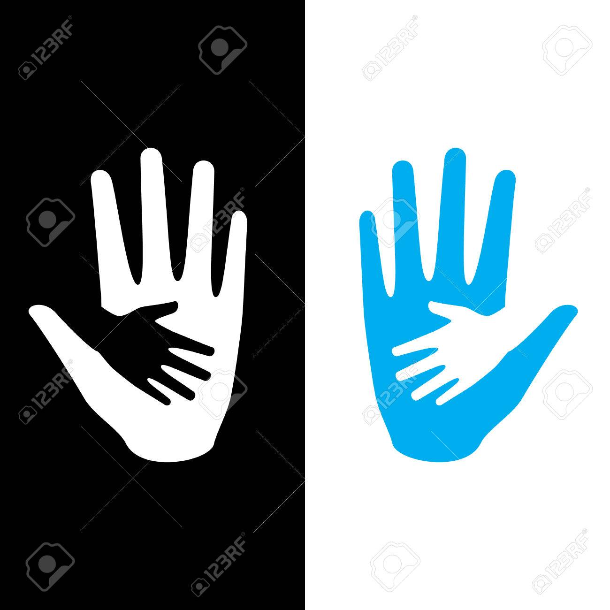

HOPE
Read About Us
Tools Used:
To develop this project, we have used the following:
• Browser (Chrome, Microsoft Edge etc.)
• Editor (Sublime Text)
• XAMPP Control Panel
• GitHub
• Git (open source distributed version control system)
• Creately (online ER diagram tool)
System Images against the Specification: Give a screen shot of some GUIs (Midterm project) and write a very small description (Maximum 40 words) for each of the GUIs.
1. Login Page: In this page, all type of users have to provide their basic information such as User Name and Password. If those information matches with the stored data of the previous users they will get access to the incoming pages.
Impact of this Project:
beneficiary works like pollution control, give medicine to the poor and needy, save street animals etc. They can easily accomplish their works if a good and well-established crowdfunding website can be developed and found. This will have a great impact on our society as well as our environment. Again, this startup can make more successful organizations and will contribute to change our society and environment by their future works.
Limitations and Possible Future Improvements:
Our application has some limitation like if there is any donor or project initiator who has bad intentions, can’t be verified by us. Beside, we cannot verify if the project money is properly used or not. If donors do not feel interest to donate, time of other users will be wasted. After getting complains, we will block the user. However, we cannot take any action on them. It is in our plan to add the features and add the harassment sector in it.
Back to Homepage
Your Help || Our Hope